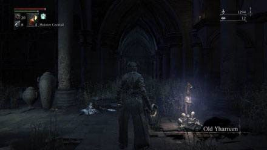
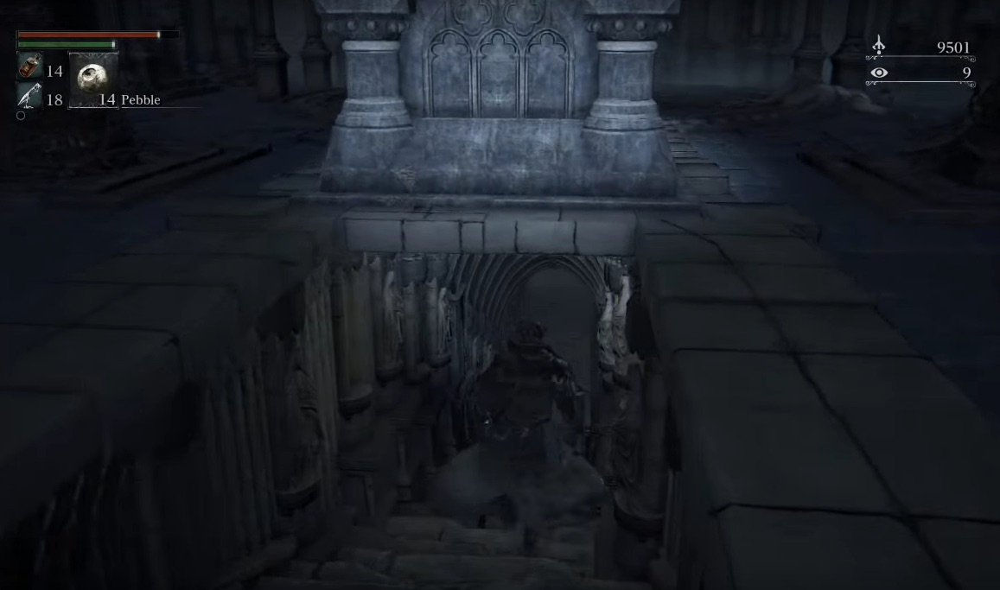
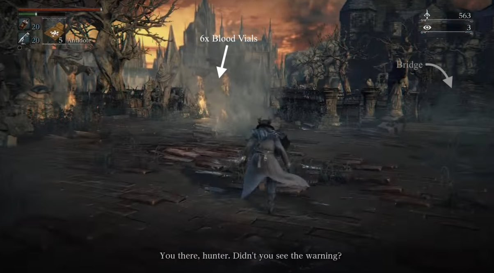
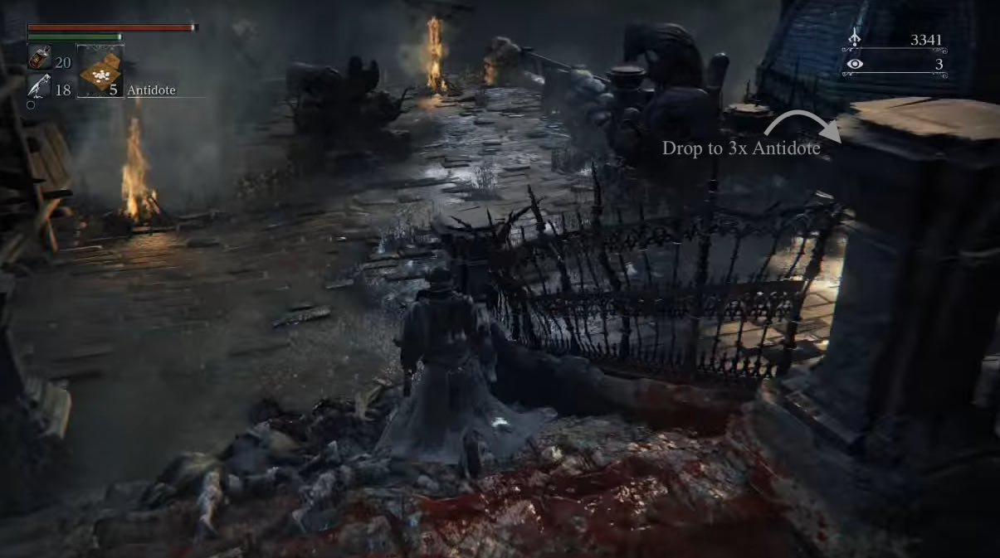
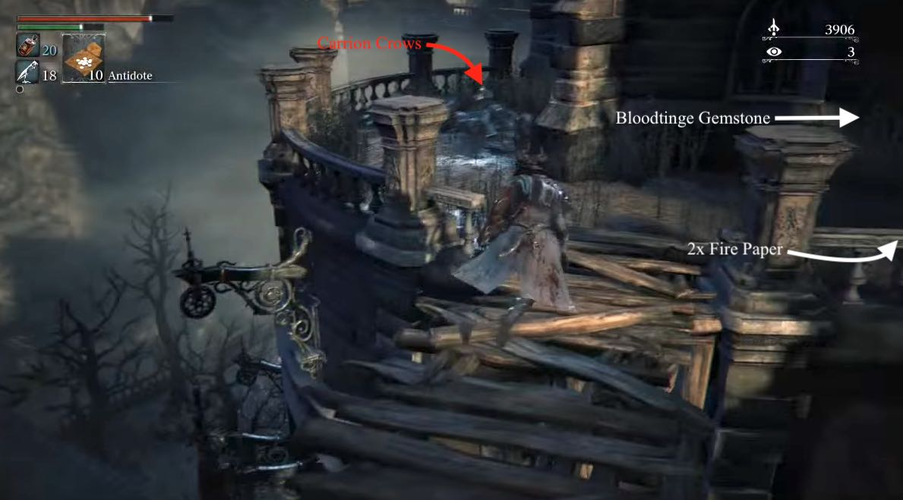
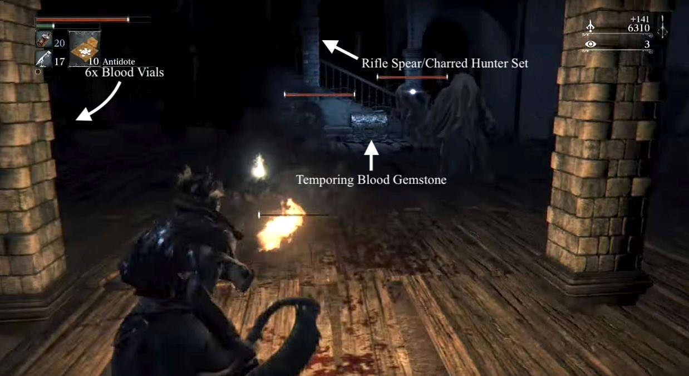
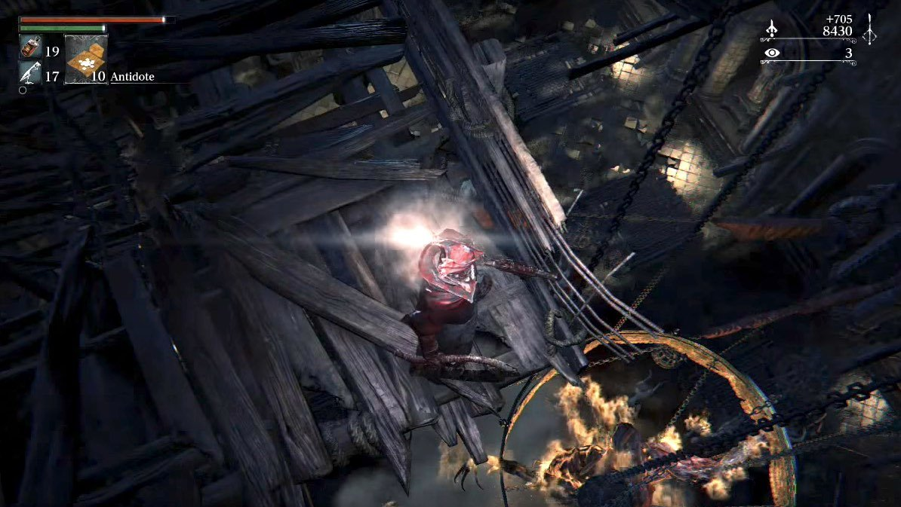
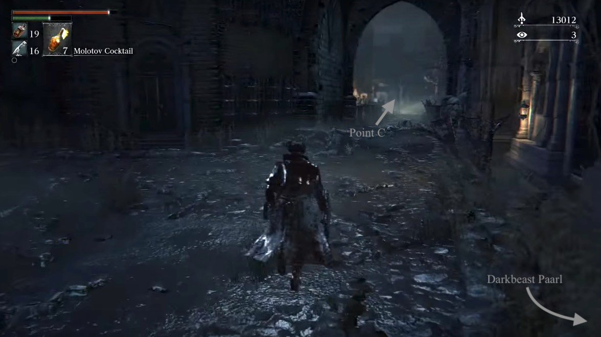
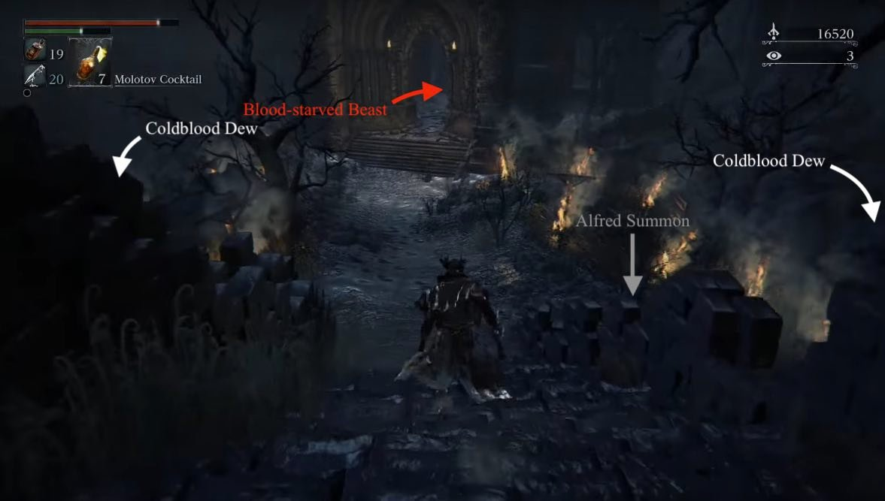
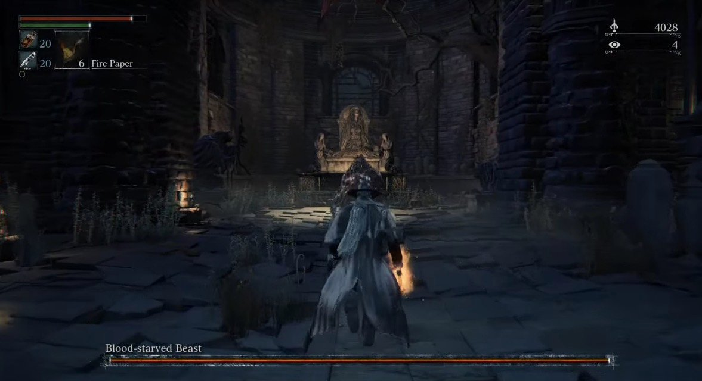

Old Yharnam is a location in Bloodborne. Use the lever on the balcony to access the path found under the large tomb in the Cathedral Ward.
General Information

- Previous: Cathedral Ward
- Next: Healing Church Workshop, Old Yharnam, Nightmare Frontier, Hemwick Charnel Lane
- Suggested Level: 20 to 25
- Suggested Upgrade: +2 or +3
- Bosses: 1
- Lamps: 2
- Insight Gained:
- Insight Gained: Find Blood-Starved Beast (+1), Defeat the Blood-Starved Beast (+3),
Old Yharnam Map


NPCs in the area
Bosses
Items
Weapons
Consumables
- Twin Blood Stone Shard x13
- Blood Stone Shard
- Coldblood Dew x7
- Thick Coldblood
- Antidote x15
- Madman's Knowledge x3
- Beast Pellets
- Fire Paper x4
- Quicksilver Bullets x10
Specials
- Ritual Blood
- Tempering Blood Gemstone x2
- Bloodtinge Gemstone
- Charred Hunter Set
- Shabby Set
- Bloody Messenger Head Bandage
Enemies
- Beast Patient – These enemies are afraid of fire, equip a Torch / Hunter Torch to make them recoil in terror.
- Cloaked Beast
- Scurrying Beast (Wandering Madness)
- Carrion Crow
- Djura's Ally (Hunter)
Lore Notes
- "The red moon hangs low, and beasts rule the streets. Are we left no other choice, than to burn it all to cinders?". Find this note up the stairs from the Bell Chime Maiden Spawn, near the Charred Hunter Set
Old Yharnam Walkthrough
Tomb Raider
Enter the tomb you have just been granted access to via the lever in Cathedral Ward. At the bottom of these stairs, you'll notice an item -Tempering Blood Gemstone (1)- straight ahead. Turning right and heading to the bottom of the stairs, you'll encounter another Scourge Beast similar to those you faced on the Great Bridge. Continue down the staircase behind it and drop down the ladder to find 4x Antidote up one flight of stairs, then head all the way down to find the first Lamp of Old Yharnam. On the right of the Lamp, you can find 3x Pungent Blood Cocktail behind some pots. When you're ready, proceed to open the giant black doors ahead of the Lamp.

Old Yharnam Map 1
As soon as you open the doors, you'll find a Wandering Madness next to a bonfire that will drop down the platform in order to escape from you. Take care of it swiftly and collect your 2x Blood Stone Shards. Down here you can gather another Blood Stone Shard, and at the bottom, the Hunter's Torch. Be careful dropping down here as there is a trap with two Cloaked Beasts. They're not too strong in themselves, but they can inflict slow poison on you surprisingly quickly. One will be stood on its own in a courtyard, but engaging it will aggro the second one. Once they're dealt with, use the walkways and ladders to return to the top where you initially saw the Wandering Madness, picking up a Coldblood Dew(2) at the top of the ladder.

Facing the big black doors, head right, passing the bonfire. Upon doing so, Djura's voice will be heard, warning you to turn back -of course, this won't stop us. Pick up the 6x Blood Vials on the left then proceed to cross the bridge but be ready to face a Beast Patient. At the end of the bridge you'll arrive at an open courtyard with smoke emerging from piles of corpses, however will not have much time to admire the view as you'll be promptly attacked by another two Beasts, with a third sitting at the wall straight ahead. Grab a Coldblood Dew from the nearby corpse and head right to pick up another 2x Blood Stone Shard. Head back and this time go around the other side of the church building and you'll encounter another Cloaked Beast, kill him and pick up the Coldblood Dew near by. Head back round the the front of the church and proceed down the stairs.
This will prompt another warning and not long after, more enemies (3 Beast Patients, 2 Cloaked Beasts) will emerge to follow up on the threat. After a short time, the fire of a Gatling gun will get you so get behind cover. Head right at the stairs, and drop down to a balcony to avoid the gunfire. Here you will find a Blood Stone Shard, and once you enter the room, you'll find another 3x Antidote, and a Cloaked Beast. The downstairs exit will lead you to more gunfire and 2 aggressive Beast Patients. Lure them inside to defeat them safely, as the gunfire can create explosions with the Oil Urns laying on the area. Once they've been dealt with, exit and while sprint through, grabbing the 3x Antidote then the Blood Vial at the exit, and cross a narrow wooden bridge.

Here, a group of Carrion Crows devour a corpse that holds a Blood Stone Shard. Once you have dealt with them, rim around the right side of the entrance and find 2x Fire Paper before entering inside the building and defeating the three enemies inside (2 Beast Patients, 1 Cloaked Beast that jumps through a wall on the right). Check the room on the right to obtain Bloodtinge Gemstone, and then pick up an Antidote near the exit.

You will now exit to a courtyard where gunfire can reach you, and 3 Beast Patients are ready to ambush you. Lure them into the safety of the building to fight comfortably. Once defeated, you can go out on the courtyard to grab a Coldblood Dew and then dash along another narrow wooden bridge. You are now at Exit A, but you cannot activate it yet. To your right, you may return to a courtyard with a Hunter -he drops 6x Bone Marrow Ash. but in the range of the Gatling gun. To your left, stairs leading to Djura, the hunter who has been gunning at you. If you fight the hunter on the courtyard, make sure to stay behind the statues for protection, however it is advised to lure him to exit A and fight him there, as you are clear of the Djura's line of sight.
Note: It is advised you do not engage Djura at this time, and come back here later to engage him in dialogue.
From the top of the stairs next to exit A, run across the courtyard and hug the wall moving left, until you find an opening on to drop down (marked on the map). Drop to a ledge below and then further to the entrance of the lower floor. At the bottom you will enter a room filled with Beast Patients and Cloaked Beasts, a chest with a Tempering Blood Gemstone and 6x Blood Vials; defeat the enemies first. You can deal with them via AOE attacks or by parrying, as you gain invincibility frames when doing a visceral attack and it has a "push back" effect on nearby enemies. Once you have dealt with them, head up the stairs, grab the Rifle Spear off a corpse under a vase then grab the Charred Hunter Set at the top, along with a Coldblood Dew right outside. Beware of more enemies rushing you as you exit!.

You can now take the stairs on the right to return to the courtyard area where you are free from Djura's fire (near exit A) , and have two choices to proceed:
- If you climb the initial ladder, turn right, and fall onto the balcony below, there is a small bridge with a larger robed Cloaked Beast , leading to the rafters of the altar chamber. From this vantage point, there is an inconspicuously tied rope at the end of the bannister which can be attacked, to drop flammable oil onto the demon in the center of the chamber, lighting the demon on fire and killing many of the enemies on the ground floor.

- You can walk forward and left into the large abandoned building. In this area, you will find many attacking enemies as you proceed. It is recommended you watch the exit towards the beams and makeshift structures of the building to grab the many items hanging from them. You will have to perform several drop-downs and come back up to obtain all of them. Please see the map below for details and note point 3, the Bloody Messenger Head Bandage. Assuming you do not go out on the beams, you will obtain 3x Antidote from the corpse next to the stairs, 1x Madman's Knowledge from way down and a Blood Stone Shard from a corpse in the second floor balcony. Enemies will "wake up" and rush you during the descent, so be careful turning corners and remember to divide and conquer.
The bottom floor of the building has some hooded enemies that can be dealt with safely in the large environment, and hide away 1x Madman's Knowledge and 1x Ritual Blood on the altar. Exiting the building will place you at Entrance B.
Old Yharnam Map 2
From Entrance B, turn left and fight a group of Carrion Crows to claim the Blood Stone Shard they protect. Turn around and continue straight until you come across 6x Blood Vials and a doorway on your right, leading to a ladder. Climb it to unlock this shortcut leading upstairs to Djura.
Climb back down the ladder and turn into the corridor next to you. As soon as you enter the room, rush to kill the Wandering Madness in the far left side of the room, ignoring the three Beast Patients until you kill your target. Tip: Using the Hunter's Torch on the beasts will cause them to cower and retreat for a moment before pouncing once again, giving you a little bit of breathing room. Head down the short steps and look for a corner in this open area to collect 2x Pungent Blood Cocktail, but be careful as there are two Scourge Beasts patrolling around the left of this area. Best advice is to wait for them to split up and go after the right hand one first, then return and deal with the second one, unless you want to take on both together. Head to the right hand side of where you initially find the Beasts and continue down this dead-end corridor to find a door and 2x Blood Stone Shard - you will not be able to open this door towards Darkbeast Paarl yet.

Returning towards the area where the Beasts were patrolling, continue down the street towards Point C, being mindful of enemies breaking through the house doors. When you cross the bridge, turn left into narrow corridor and find 6x Beast Blood Pellet at the end. Once you've picked the pellets up, a Beast will drop from the side of the building and try to ambush you. Back on the main street, another Beast will come through a door, that reveals the path to Shortcut C. Explore the stairs to find an Antidote, an ambushing 2 Beast Patients next to 2x Blood Stone Shard, and 2x Fire Paper at the top next to the shortcut opening.
Returning downstairs, follow the path until you hear a screeching sound. Ignore that for now and go to the right of the small building to take on another Scourge Beast. Like the other werewolves in this area, he can cause slow poisoning, so be careful. Go down the smoke filled alley on the left of the building and kill the Cloaked Beast. Right before the wooden ramp, you can collect 10x Quicksilver Bullets. There's another Wandering Madness, and 2x Bold Hunter Mark beyond the ramp, to your right.
Continuing on, a large open area where burning fires and Cloaked Beats await. Stick to the left side to defeat the first enemy that hides next to the tree and collect the Coldblood Dew. You can also check the opposite side of the map for more Coldblood Dew next to a large rock, but beware, there are three of these enemies lying in the long grass in ambush. You won't be able to lock on until you've triggered them but if you keep an eye out you'll be able to see them and use the opportunity to do a charged attack on them.

Proceeding forward will trigger the level's boss fight and unlock the next lamp.

BOSS FIGHT: Blood-starved Beast
Should you struggle with the boss fight, next to the slope that bring you down to the area is a note; reading this note then ringing your Beckoning Bell will summon Alfred as an NPC summon (providing you agreed to cooperate with him when you met him in Cathedral Ward).
Old Yharnam Maps
 Anonymous
Anonymous
- Anonymous
- Anonymous
So I was roaming around Old Yharnam getting blood echos and I noticed the hanging dead bodies. So I started counting them all throughout the entirety of the area and i got a grand a grand total of 62 hanging dead bodies.(If you want to do a recount to be sure be my guest but take heed they're difficult to find and they sometimes come in large groups) I always wanted to know the meaning behind this whether they are trespassers or the same hunters from the dlc or just simply symbolism. If anyone can fill me in on the story behind this that would be great.
- Anonymous
4th paragraph after "Old Yharnam Map 2 "... "Right before the wooden ramp, you can collect 10x Quicksilver Bullets." That's called a street and it's made of dirt and stone genius.... and you should've said "to the right of the path coming up on your left, there's 10 bullets"... >.< I'm running around that little circular area 5 times looking for a wodden ramp.
- Anonymous
Are there really any twin blood shards here ? I looked everywhere and not even one
- Anonymous
Any tips on BSB its been like 60 tries and still no succes what so ever. I use fire-paper, Blood cocktails , my gun but still I can’t beat her or him or it.
- Anonymous
For a guide this is awfully unfinished for a few year old game. I don't mean to hate but I'm in the rafter section just after Djura (where it told me to cut the rope to burn the enemies at the bottom) and I picked up the madman's knowledge from the beam here, but the guide doesn't really tell me to grab this particular item, nor does it tell me where to drop from here. The rafter section tells you nothing beyond cutting the rope.
- Anonymous
Is the loot enemy closest to Djura on map 1 supposed to be the hunter that drops the 6x Bone Marrow Ash?
- Anonymous
Where's the thick cold blood? Has no marker on map but indicates that there is one in there?
- Anonymous
One thing I rather dislike about this area is that the game is like: "Hey, we know this area is rough as you probably just started the game, and by now you should have a +3 weapon, and the giant Gatling gun and the hunter and the beast patients can be tough, but at least it's optional. Optional, that is, if you don't wanna do the chalice dungeons, or start much later and then having to end up do them anyway because you need the ritual blood." You can just skip it and save it for lategame, but it's a pain in the ass regardless. And accidentally killing a beast after befriending Djura feels like when you're playing with a magnifying glass, looking down, and realising that you killed 50t ants and their colony, burnt a hole in your shoe and foot, and looking up and realising you're on mercury. Bloodborne is amazing, but just this particular section seems just a tad forced.
- Anonymous
- Anonymous
- Anonymous
Trying to kill the hunter in the courtyard I accidentally killed a beast, is there any way to re-pacify Djura?
- Anonymous
you never mark where to jump down on the map to acuire the charred hunters gear... after entering the courtyard you fight the hunter in, head to the statue to the back left, hide and kill the beasts that attack while our trigger happy friend tries to cut you in half with the chaingun. put your back to the statue an you'll see a gap between the building in front of you and the railing. Drop down, and drop again from that ledge (I tried clearing the gap between the platforms, didn't make it... almost had a heart attack until I fiured out I landed right where I was supposed to be, haha)
- Anonymous
- Anonymous
When I go down the stairs where Djura starts shooting at you, there's a beast that is glitches underground, idk why this happens
- Anonymous
The guide mentions a twin blood stone shard... I don't see it? The map isn't very helpful... Is by the Gatling tower? Also, twin blood stone shard page doesn't have the location posted... As far as I can see.
What is the strange groaning noise heard at the bottom of djuras ladder?
I don't know if this is actually true. They never seemed afraid of my Hunter's Torch like the other Beast Patients when I went through. Can anyone else confirm either way?
- Anonymous
Carrying a torch in this area is very helpful, the small common enemies (not the hooded ones) back away from the flame.
- Anonymous
So I was going through Old Yharnam when I noticed something. The enemies with the blanket/cloth over there head have red eyes, just like the normal guys who can poison you. Could that mean that red eyes were a symbol of the Ashen Blood Sickness that it talks about in the description of the Antidote. Which leads me to the second theory I have, what if the enemies with the cloth over there head were trying to hide there eyes so they would not be figured out. This also could explain why the normal guys have all sorts of scars and burns while the cloth guys are not damaged at all. Could the cloth people be people who survived the burning of Old Yharnam unharmed but were soon turned in to beasts? That would explain why they are often found either off to the side or in a group. The big ones also show more intelligence than the more burned guys, like when one of the cloth guys falls down from the rafters and attacks you from behind. This would also explain why they don't fear fire as much, they weren't burned or injured during the burning. Sorry for the scatter brained mess of this article I literally just came up with this a few minutes ago but I would be interested to see what people think
- Anonymous
So to have Djura be friendly I need to get snatched by a Snatcher, but those only spawn when you kill the Blood-Starved Beast...which can only be reached by going past Djura which would aggro him and therefore make him hostile. Could someone please explain like I'm five, I'm probably just missing a point but any help will be welcome
- Anonymous
I just defeated the Blood-Starved Beast with someone in Co-op and after it took the other person out I went to use the new lamp to go back to Hunters Dream and it goes through the animation but it doesn't do anything. I shot the blank to end co op but it still isnt letting me go back to the Hunters Dream. I ran to the other lamp and it did the same thing I can't go back. Is this part of the game or is this a bad glitch???
- Anonymous
The crucified Beast in the Cathedral of Old Yharnam is exactly identical to the BSB back skin and all. Interesting note.
- Anonymous
If you go back to Old Yharnam after the blood moon has appeared, it will still be a normal moon, I would think its intended since it seems impossible to miss.
- Anonymous
Hey, is there an easy way to quickly kill the ground hunter next to djura? I'm using an un upgraded hunter axe
- Anonymous
Early on, right after you beat the BSB, this area isnt bad for farming. Takes 10-12 minutes, gives about 15k blood echoes. That's from the Old Yharnam lamp to the Good Chalice lamp.
- Anonymous
theres a staircase behind one of the bookshelfs in the beginning of old yharnam its got the 1st big cloaked beast in it and the a tiny balcony right behind it. you can move the camera to a spot to see it but i cant destroy the bookshelf to get to it
- Anonymous
See that floating statue near the Old Yharnam lantern. If you go through the giant wooden door with the sign that says "hunters not wanted or something" and look straight up you will see a floating statue just like the floating door in DKS1.
- Anonymous
- Anonymous
- Anonymous
You can easily see Old yharnam to the right on the Bridge to Gascoigne, and even spot Djuras tower; directly to the left you can see the temple where you fight the BSB, even when you slide down the ladder to the aqueduct you are level with a window and see into it. When you are in Old Yharnam tho, the distance from the bridge is much taller and misaligned from the former position and wen you look out the same window the balcony is way off and out of sight. Just found it interesting.
- Anonymous
I just finished off the beastonishing and don't know where to progress to. Help pls
- Anonymous
I hear what seems to be crying at certain points on old yharnam. It happens randomly then stops after a few. Anyone know what thats about?
- Anonymous
When you're on the bridge that leads to father guacamole (one with big rolling fire ball) if you look down you can see old yharnam, in fact directly beneath it is the church of the good chalice and starved beast
- Anonymous
I'm having difficulty finding this weapon. I killed off the hunter (NOT Djura), and then took out the crows to drop down a ledge. I cleared the building as I walked up and got the Charred Hunter set, but no Spear. What gives? Is the map accurate?
- Anonymous
I may have read that Guide to friendly djura wrong, but if I'm not mistake he'll stay aggressive after leaving and returning to the area. So how do you get to blood starved beast without him spotting you?
i miss the old yharnam, straight from the go yharnam, chop up the soul yharnam, set on their goals yharnam, i hate the new yharnam, the bad mood yharnam, the always rude yharnam, spaz in the news yharnam, i miss the sweet yharnam, chop up the beats yharnam
45
+13
-1